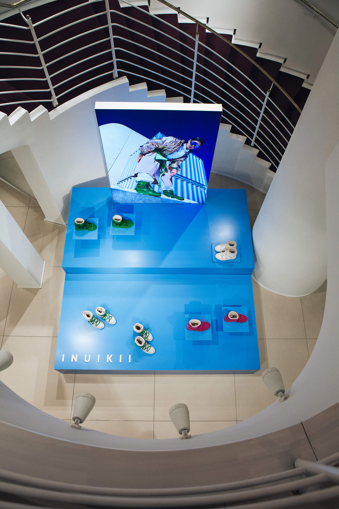

Abstimmung, Reihenfolge und Partner werden gebündelt, damit das Projekt nicht zwischen Gewerken zerfällt.
Partnernetzwerk · Düsseldorf · NRW
Alles aus einer Hand.
Für Projekte, die über die Fotografie hinausgehen: hochwertige Drucke, Großformat, Werbetechnik, Webdesign, Video und musikalische Begleitung — seriös koordiniert, visuell abgestimmt und über erfahrene Partner in Düsseldorf und NRW umgesetzt.
Dienstleistungen im Überblick.
Vom einzelnen Fine-Art-Print bis zur kompletten Markenfläche, Website, Filmproduktion oder Eventbegleitung. Sechs ergänzende Bereiche, ein gemeinsamer visueller Anspruch.
01 · Fine Art
Fotolabor & Druck.
In Zusammenarbeit mit einem Druckpartner in Düsseldorf entstehen hochwertige Fotodrucke, Bücher, Leinwände und Spezialmaterialien — von der Motivprüfung über Papier und Oberfläche bis zur finalen Präsentation an Wand, Tisch oder Portfolio.
Mehr Infos

02 · Präsentation
Großformatdruck.
Für große Auftritte: Poster, Banner, Acrylglasdrucke oder Messesysteme in hochwertiger Qualität — geeignet für Ausstellungen, Autohauspräsentationen, Schaufenster, Messewände und Interior-Lösungen mit klarer Fernwirkung.
Mehr Infos

03 · Beschriftung
Werbetechnik.
Schaufensterbeklebung, Firmenschilder, Displaylösungen und Raumgrafiken werden gemeinsam mit einem Werbetechnik-Partner geplant und sauber umgesetzt — inklusive Materialwahl, Visualisierung und Montage vor Ort.
Mehr Infos

04 · Online
Webdesign & SEO.
Gemeinsam mit einer Webagentur entstehen moderne Online-Auftritte, die Bildsprache, Performance und Sichtbarkeit verbinden — mit Struktur für Leistungen, lokale Suchanfragen, Referenzen, Blog und einfache Kontaktaufnahme.
Mehr Infos

05 · Event
Viola Musik.
Musikalische Begleitung für besondere Momente — ob Hochzeit, Firmenfeier oder Event. Live-Musik schafft Atmosphäre, bleibt aber dezent planbar: passend zu Ablauf, Raum, Gästezahl und gewünschter Stimmung.
Mehr Infos

06 · Motion
Videografie.
Professionelle Videos für Fahrzeuge, Events, Imagekampagnen und Social Media — konzipiert mit fotografischem Blick, klarer Dramaturgie und passenden Exportformaten für Website, Reels, Kampagnen oder Präsentationen.
Mehr Infos

07 · Sonderformat
Drucke & Sonderanfertigungen.
Für Motive, die einen besonderen Ort bekommen sollen: Sonderformate, Materialtests, dekorative Drucklösungen und individuelle Präsentationen werden passend zu Raum, Anlass, Menge, Oberfläche und gewünschter Wirkung geplant.
Mehr Infos

Projektablauf
Ein Bildsystem, mehrere Ausgänge.
Der Vorteil liegt nicht in möglichst vielen Leistungen, sondern in einem sauber geführten Prozess: Bildsprache, Material, digitale Präsenz und Präsentation wirken am Ende wie ein zusammenhängender Auftritt.
Druck, Website, Video oder Event-Auftritt werden nicht einzeln gedacht, sondern auf dieselbe Bildsprache ausgerichtet.
Kurze Wege, klare Kommunikation und erfahrene Partner für Produktion, Präsentation und digitale Umsetzung.
Format, Material, Umfang und Timing richten sich nach dem Projekt — nicht nach einer festen Schablone.
Nächster Schritt
Projekt kurz anfragen.
Schreiben Sie kurz, welche Leistung Sie interessiert, wo das Projekt stattfindet und welchen Zeitraum Sie planen.